This manual takes the real code of Attendra UiTM and explains what it does in simple English. The code and the line numbers were copied from the project by a script, so line 120 in this manual is line 120 in Android Studio. If you edit the code later, the line numbers will move.
Part 1 explains the words and patterns that appear in every file. Read it first.
Part 2 follows the app from opening it to the attendance report. One chapter is one feature.
Part 3 explains the database and its security rules.
Part 4 is a reference: every Java file, every method and every page layout (XML).
Part 5 has questions an examiner may ask, with short answers, and a word list.
How to read a code box: the grey bar shows the file name and the method. The gold lines are the lines that are explained in the table below the box.
Tip for the presentation: open the same file in Android Studio with Ctrl+Shift+N and jump to a line with Ctrl+G.
1.1 The names in this project
The files were renamed to make them easy to find. One page has two files with the same name: the Java file and the XML file.
You see
What it is
Example
...Page.java
The Java code of one screen: what happens when you tap something
VerificationPage.java
..._page.xml
The layout of the same screen: what it looks like. Android only allows small letters and _ in XML file names
verification_page.xml
...Java.java
Reads from and writes to the Firebase database. No screen. (Before: ...Repository)
VerificationJava.java
...ViewModel.java
Remembers the data of a page when the phone is rotated
VerificationViewModel.java
...PageBinding
Made by Android from the XML. Never edit it. It gives Java the buttons and texts of the page
VerificationPageBinding
item_...xml
One row or card that is repeated in a list
item_history_row.xml
sheet_...xml
A panel that slides up from the bottom
sheet_manual.xml
view_...xml, include_...xml
A part that is used inside several pages
include_appbar.xml
1.2 The folders (project map)
Folder (in app/src/main)
What is inside
java/.../data
Everything that talks to Firebase: login, sessions, attendance, email codes
java/.../model
Plain classes that hold data: Session, Course, Group, Attendance
java/.../ui/splash, ui/auth
First page, log in, register, forgot password, email code
java/.../ui/lecturer
Lecturer pages: Home, Classes, History, Live Monitor, Report, Semester summary
java/.../ui/session
The Create Session steps
java/.../ui/student
Student pages: Home, My Attendance, Notifications, Check-in, Phone check
Both roles can also open ProfilePage, MyClubsPage and PreferredNamePage from Settings.
2. Patterns you will see in every file
2.1 Two kinds of pages: Activity and Fragment
Kind
What it means
How to recognise it
Where the code starts
Activity
A full screen. It must be listed in AndroidManifest.xml
extends BasePage or extends MainTabsPage
onCreate()
Fragment
A part of a screen that sits inside an Activity, for example one tab
extends Fragment or extends BaseStepPage
onCreateView() then onViewCreated()
Android calls some methods by itself, at fixed moments. This is called the lifecycle:
Method
When Android calls it
What we usually do there
onCreate
The page is made
Load the layout, set the buttons
onCreateView, onViewCreated
Same, but for a Fragment
Load the layout, then set the buttons
onStart
The page becomes visible
Start listening to the database
onResume, onPause
The user can / can no longer use the page
Start and stop the map
onStop
The page is hidden
Stop listening, to save battery and data
onDestroy, onDestroyView
The page is removed
Clean up
2.2 From XML to Java: binding
The XML gives every important item an ID, for example @+id/btn_login. Android makes a class with the name of the XML + "Binding". In Java the ID is written without underscores: btn_login becomes binding.btnLogin.
layout/login_page.xmlthe Log in button
85android:id="@+id/btn_login"
86android:layout_width="match_parent"
87android:layout_height="@dimen/button_height"
88android:layout_marginTop="4dp"
89android:text="@string/log_in" />
Line
What it does
85
The ID of the button. Java uses it as binding.btnLogin.
new View.OnClickListener() { ... } is called an anonymous class: a small class without a name, written in the place where it is needed. @Override means "this method was promised by Android or by the parent class, and here is my version".
2.4 Waiting for Firebase: Callback
The database is on the internet, so an answer takes time. The app must not freeze while it waits. So we hand over a Callback, and Firebase calls it later.
data/Callback.java
4publicinterface Callback<T> {
5void onSuccess(T result);
6
7void onError(String message);
Line
What it does
4
<T> is the type of the answer, for example Callback<String> gives a text.
5
Called when it worked. result is the answer.
7
Called when it failed. message can be shown to the user.
Important: code that is written below a database call runs before the answer arrives. Everything that needs the answer must be inside onSuccess.
2.5 Reading and writing the database: Db.java
All database work goes through this one file. It also chooses between the live database and the local test emulator.
data/Db.javaget()
38/** The database (the local emulator in emulator builds). */
Remembers the listener, so it can be stopped later.
data/Subscriptions.javaclear()
59/** Removes every listener added through this object. */
60publicvoid clear() {
61for (Handle h : new ArrayList<>(handles)) {
62 h.remove();
63 }
64}
Line
What it does
62
Stops every listener. Pages call this in onStop.
2.7 ViewModel and LiveData
When the phone is rotated, Android destroys the page and makes it again. Data in the page would be lost. A ViewModel survives this. The page "observes" LiveData in the ViewModel: when the value changes, Android calls onChanged and the page draws itself again. Only 4 pages need one: Register, Verification, Create Session and Add Teaching Class.
Firebase remembers who is signed in, even after the app is closed.
47
Nobody is signed in: stay on this page.
51
Somebody is signed in: find out where to go. This is the automatic login.
55
The email is not verified yet: sign out and show the buttons.
60
All good: open the right page.
3.2 AuthPage: the frame around 4 pages
AuthPage is an Activity with an empty frame (auth_container). Login, Register, Verification and Forgot password are Fragments that are put in this frame.
Not verified yet. The code page changes it to true.
125
The time of the server, not of the phone.
137
Claims the student ID. The rules allow each ID only once.
138
A list of students per group, so a lecturer can find them fast.
141
A list of members per club.
149
Saves if this user is a student or a lecturer.
152
Saves everything together.
5. Verifying the email (6-digit code)
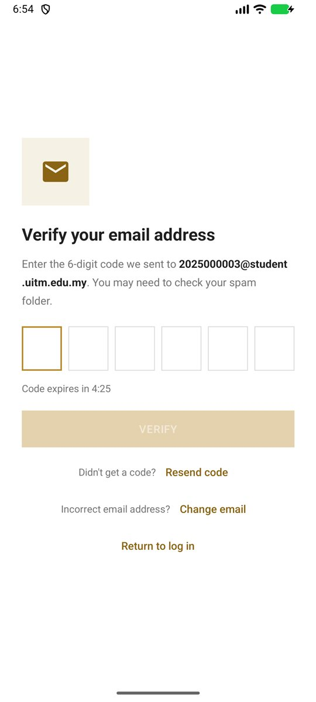
verification_page.xml
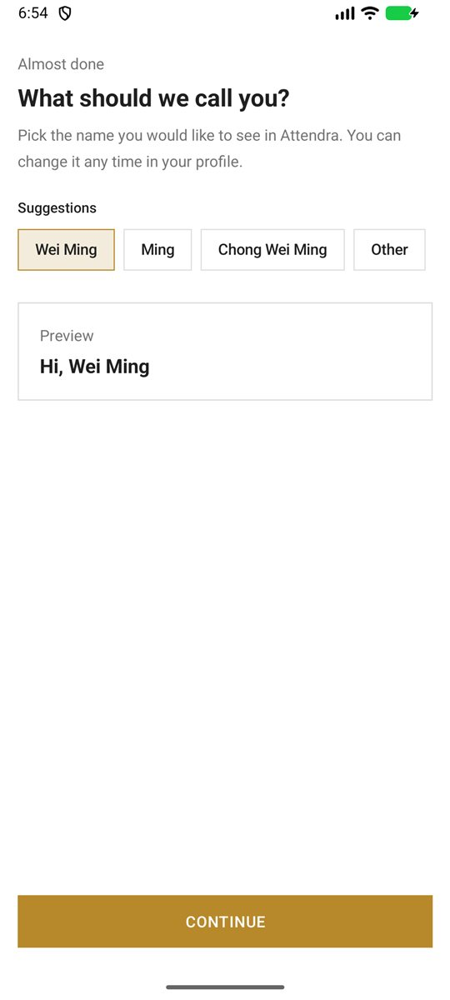
preferred_name_page.xml
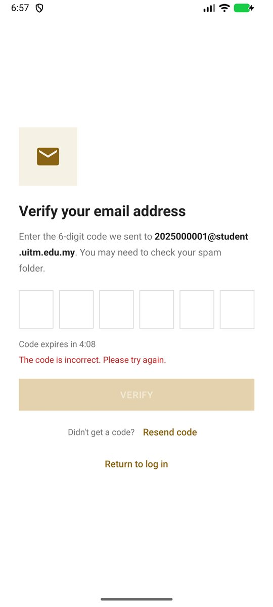
Wrong code
Three files work together: VerificationPage (the screen), VerificationViewModel (remembers the state and the timer) and VerificationJava (the code and the database).
5.1 VerificationJava: making the code
data/VerificationJava.javanewCode()
225/** Random 000000–999999. Leading zeros are kept, so it is always 6 digits. */
219 showError(message); // Tried again on the next tick
220 }
221 });
222}
Line
What it does
208
Wait until all sessions are loaded.
209
Closes every session whose end time has passed (see chapter "Closing a session").
7.3 SessionWatcher: following many sessions
The database has a small index, for example sessionsByGroup/CDCS2405A, that only lists session IDs. SessionWatcher follows the index and then every session in it.
The app works out the semester from the date: March to August, or September to February.
util/SemesterUtil.javaindexOf()
61/** The number of the semester this day is in. */
62privatestaticint indexOf(Calendar day) {
63int year = day.get(Calendar.YEAR);
64int month = day.get(Calendar.MONTH);
65if (month >= SECOND_START) return year * 2 + 1;
66if (month >= FIRST_START) return year * 2;
67return (year - 1) * 2 + 1; // January–February: still last September's session
68}
Line
What it does
65
September to December.
66
March to August.
67
January and February belong to the semester that started last September.
8.2 SeedCache: names of courses, rooms and groups
Courses, rooms, clubs, programmes and groups do not change, so they are read once and kept in memory. The reads run one after another: courses, venues, clubs, programmes, groups.
87 Db.readOnce(Db.root().child("venues"), new Callback<DataSnapshot>() {
88 @Override
89publicvoid onSuccess(DataSnapshot venues) {
90for (DataSnapshot v : venues.getChildren()) {
91 Venue venue = v.getValue(Venue.class);
92if (venue != null) {
93 venue.id = v.getKey();
94 VENUES.put(venue.id, venue);
95 }
96 }
97 loadClubs(callback);
98 }
99
100 @Override
101publicvoid onError(String message) {
102 callback.onError(message);
103 }
104 });
105}
Line
What it does
91
Firebase fills a Venue object from the data.
94
Remembers it by its ID.
97
Next step.
9. Creating a session
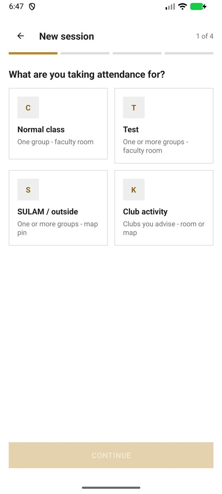
Step 1: type
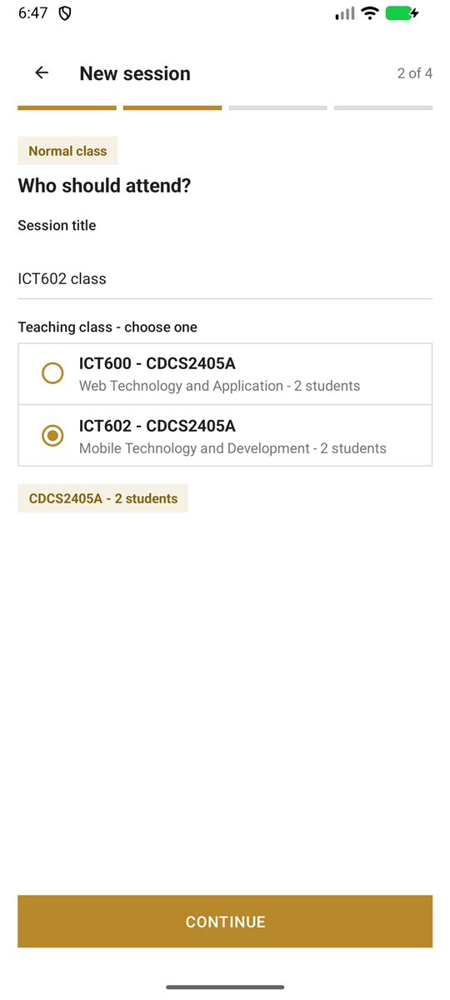
Step 2: who
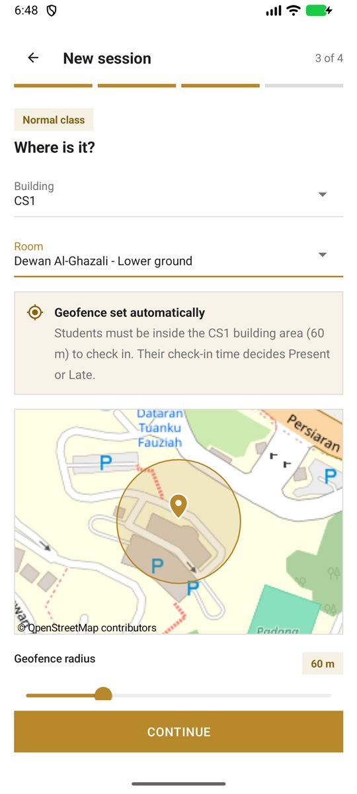
Step 3: where
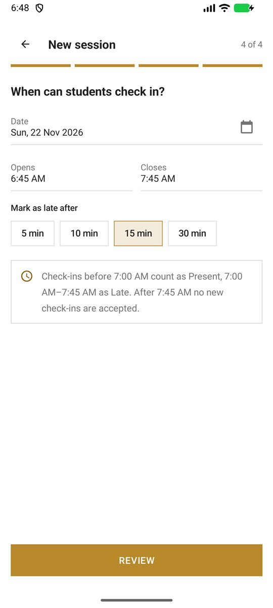
Step 4: time
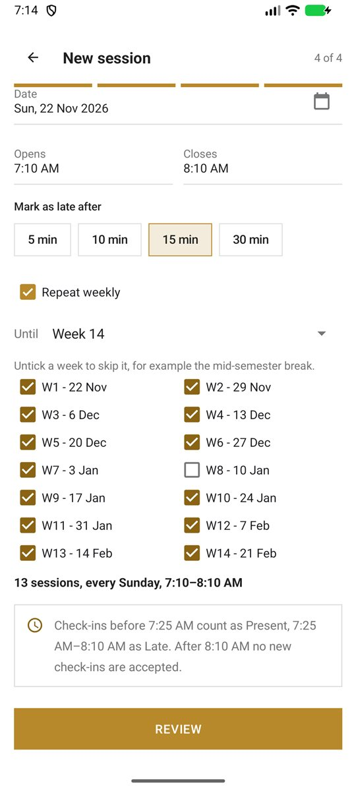
Repeat weekly
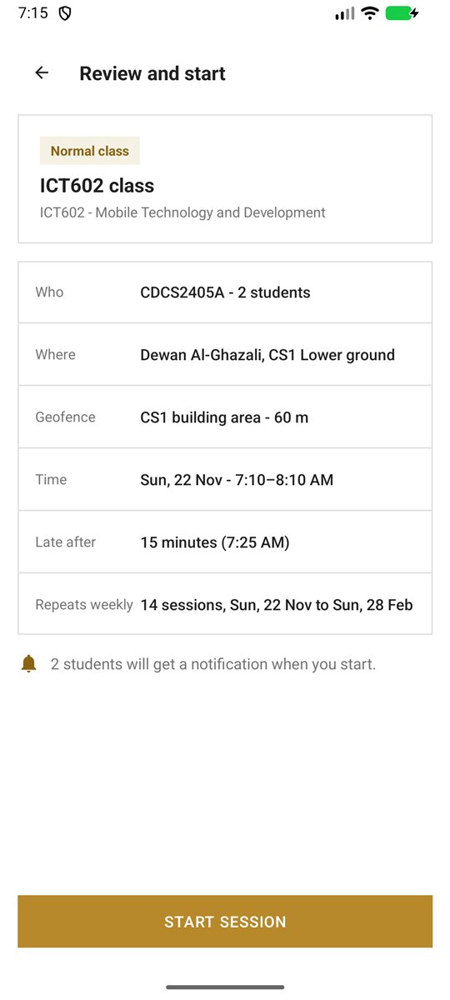
Review
CreateSessionPage is the frame with the Continue button. Each step is a Fragment: TypeStepPage, WhoStepPage, WhereStepPage, WhenStepPage, ReviewStepPage. All steps share one CreateSessionViewModel, which remembers the choices.
Draws the rows again, so the chosen one is marked.
9.3 Step 3: where
Class, Test and an inside Club meeting use a building and a room. SULAM and an outside Club meeting use a pin on the map. A building has a fixed location in the database because GPS cannot tell two rooms apart.
ui/session/CreateSessionViewModel.javausesPin()
234/** SULAM, or a Club meeting held outside: the geofence is a map pin. */
162 attempt(uid, deviceHash, Attendance.RESULT_REJECTED, reason, lat, lng, distance,
163 accuracy));
164 Db.write(updates, callback);
165}
Line
What it does
161
A rejected try is only logged. There is no attendance record.
11. The Live Monitor
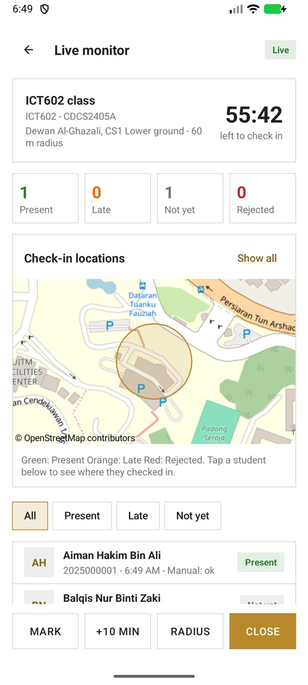
live_monitor_page.xml
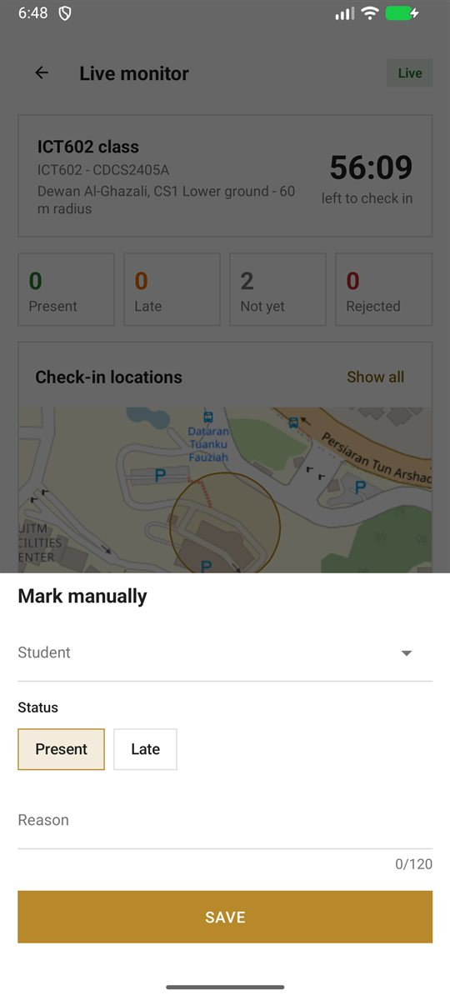
sheet_manual.xml
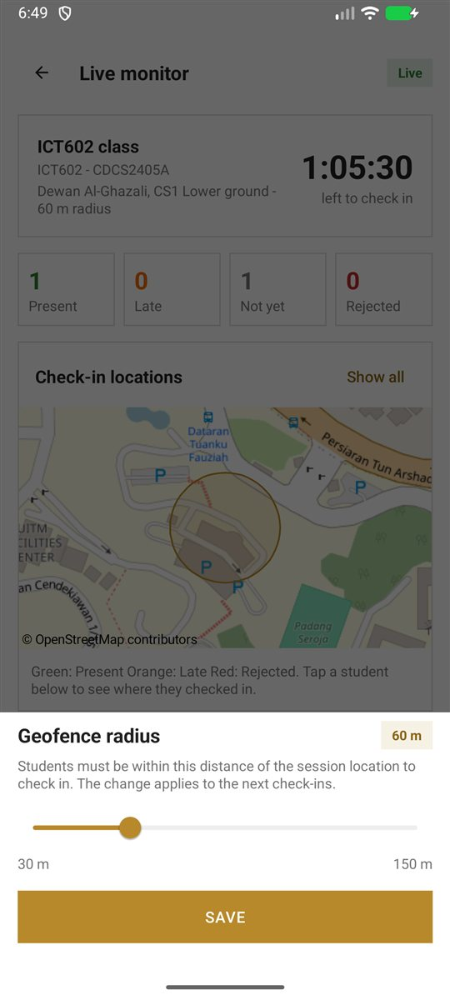
sheet_radius.xml
11.1 SessionAttendanceWatcher: the live data
It listens to the session, the attendance, the attempts and the student list at the same time. When any of them changes it calls onChanged, and the page draws itself again.
These are notifications inside the app. They are not push notifications: there is no Firebase Cloud Messaging, so nothing pops up when the app is closed.
15. Settings, profile and testing
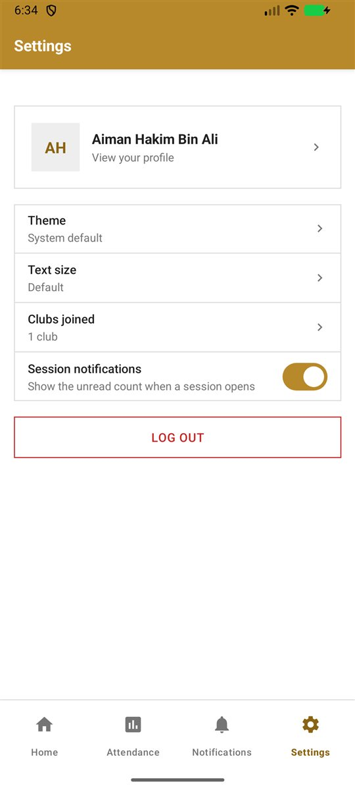
settings_page.xml
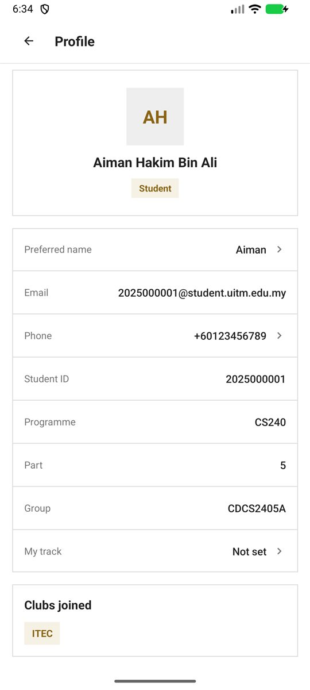
profile_page.xml
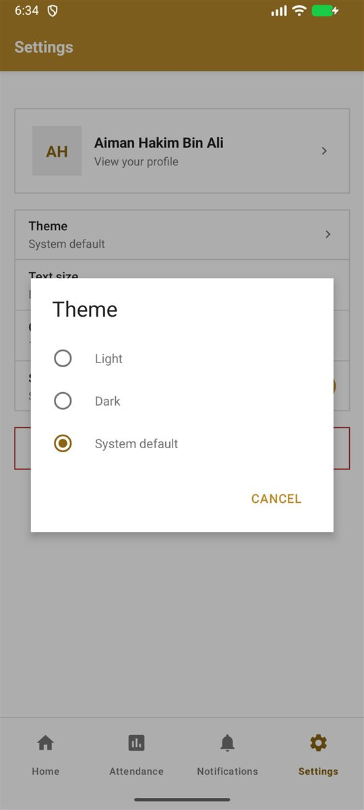
Theme
15.1 Settings saved on the phone
Theme, text size and the notification switch are saved on the phone in SharedPreferences, not in Firebase.
Two tester accounts (isTest = true) can be used to try the app. Their sessions are never shown to real students, and they never see real sessions. Holding the logo on the Log in page for 2 seconds opens the tester panel, in debug builds only.
data/TestWorld.javafilter()
60/** Keeps only the students in the given world (test or real), in the same order. */
The database is one big tree of names and values, like folders. A place in the tree is called a path, for example students/{uid}/name. Words in { } are different for every user or session: {uid} is the user ID, {sid} is the session ID.
Fixed data, imported by the admin. The app can only read it
the seed file
16.2 Security rules
The rules run on the Firebase server. Even if somebody changes the app, the server still refuses a wrong write. In a rule, auth.uid is the signed-in user, data is what is saved now, newData is what would be saved, root is the whole database and now is the server time.
Example 1: a phone can be linked only if it is free, and only to yourself.
A record can be made once and never changed. The session must be open, the student must be verified and in the group, the time must be inside the window, and the phone must be the linked phone. A lecturer can only write manual or auto records of their own session.
284
Only these 4 methods.
285
Present only until lateAfter, late only after it. Manual can be present or late, auto can only be absent.
286
Server time.
Honest limit: the server cannot know the real GPS position. The distance and fake-GPS checks run on the phone, so a changed app could lie about them. The server can check the time, group, phone and status.
Part 4: Reference of every file
17. Every Java file and method
This chapter was made from the comments in the code. The number is the line where the method starts. Methods inside small inner classes are not listed.
17.1 data: the database
AttendanceJava.java473 lines
Writes made from the Live Monitor: manual marks, more time, a new radius, and closing a session.
33
markManual
Manual attendance for one student (Manual Attendance Page): attendance/{sid}/{uid} {status, time, method: "manual", reason, markedBy} studentAttendance/{uid}/{sid} {status, time}
51
simulateCheckIn
DEBUG only ("Simulate check-in" on the Student Dashboard): writes the record a real GPS check-in would, without the location checks.
79
extendEnd
"+10 min": moves the closing time later (counting from now if it already passed).
90
setRadius
Radius sheet: a new geofence radius (30–150 m) for this session.
106
closeOverdue
Run when the lecturer opens Home or History. Closes one session after another and answers how many were closed. Does nothing if no session is overdue.
120
closeNext
Closes number i of the list, then the next one. error = the last error, or null.
149
close
Closes a session (the Close button, or auto-close when the end time has passed).
175
writeClose
Closes the session and writes Absent for everyone without a record.
223
countCourse
Answers uid -> {present, late, absent} for the CLOSED sessions of one course and group that this lecturer held in this semester. Only saved records are counted (closing a session saves Absent), the same as the student's My Attendance page.
244
countSessions
Keeps the closed sessions of the course, then counts their records.
271
countRecords
Counts the records of each student.
306
readAll
Reads many paths at the same time. Answers path -> snapshot once all are back.
344
alertGroups
Works through the groups of a closed session, one after another. An alert that fails never stops the closing: the session is closed already.
380
alertCounts
Counts the course, then reads the last alert of every student in the group.
410
writeAlerts
Saves the alerts. A student is alerted again only if the percentage fell further.
451
alertValues
The alert as saved in notifications/{uid}/{key}.
463
withMirror
The record plus its studentAttendance mirror ({status, time}), as update paths.
AuthErrors.java70 lines
Turns Firebase exceptions into short, formal messages for the user.
20
AuthErrors
Private constructor: no object is made of this class, its methods are static.
24
message
Message for an Authentication (or database write) exception.
59
database
Message for a failed database read.
AuthJava.java229 lines
Wraps Firebase Authentication (Email/Password only) for the Auth screens.
24
AuthJava
Constructor: runs when the object is made with new.
31
currentUser
The signed-in user, or null.
38
signOut
Sign the user out
46
register
Register flow.
102
undoSignUp
Removes the half-made account so the email can be used again, then reports the error.
132
login
Log in, then work out where to go (see resolveHome).
160
resolveHome
Works out where a signed-in user should go: Verify screen, Preferred Name Page, or the dashboard for their role.
191
loadRole
Reads the signed-in user's role from roles/{uid}.
214
sendPasswordReset
Sends a password reset link.
Callback.java8 lines
Result of an async Firebase call.
5
onSuccess
It worked.
7
onError
It failed. The message can be shown.
CheckInJava.java202 lines
Database side of the student's GPS check-in.
20
isEligible
Is this student allowed into this session?
39
isMember
True if the student is in the session's club or group.
74
existingRecord
The student's existing record for this session, or null if there is none.
98
writeAccepted
Accepted check-in.
157
logRejected
Rejected attempt (MOCK_LOCATION or OUTSIDE_RADIUS): logged in attempts only, so the lecturer sees it on the Live Monitor.
168
newAttemptKey
A new unique key under attempts/{sessionId}.
173
attempt
The values saved for one check-in attempt.
194
round5
5 decimals of a degree is about 1 m: enough to see where, not more.
199
round1
Rounds metres to 1 decimal.
Db.java130 lines
Single place that opens the Realtime Database.
32
Db
Private constructor: no object is made of this class, its methods are static.
39
get
The database (the local emulator in emulator builds).
50
root
The top of the database tree.
56
text
A value as text, or null if it is missing.
68
readOnce
Reads a path once, with a timeout.
101
write
Multi-path write (updateChildren) with the same timeout as readOnce.
HiddenSessions.java57 lines
hiddenSessions/{uid}/{sid} = true: closed sessions a student has hidden from their own lists (My Attendance history, Notifications).
17
HiddenSessions
Private constructor: no object is made of this class, its methods are static.
21
ref
The student's hidden sessions: hiddenSessions/{uid}.
26
ids
The hidden session IDs in a snapshot of hiddenSessions/{uid}.
40
hide
Hides a closed session.
47
unhide
Show the hidden session again
52
set
Saves true (hidden) or null (shown again).
MailSender.java198 lines
Sends the verification code email through Gmail's SMTP server with JavaMail: smtp.gmail.com, port 587, STARTTLS.
52
MailSender
Constructor: runs when the object is made with new.
60
sendVerificationCode
Sends the code email in the background.
101
session
The connection settings for the Gmail server.
122
buildMessage
MIME layout of the email.
170
send
Sends the email.
175
readRaw
Reads a text file from res/raw.
180
readBytes
Reads all bytes of a resource file.
194
escapeHtml
The name and email are typed by the user, so make them safe to put in HTML.
SeedCache.java274 lines
Courses, venues, clubs, programmes and groups from the seed data, read once and kept in memory.
34
SeedCache
Private constructor: no object is made of this class, its methods are static.
38
load
Reads the three nodes once per app run.
68
readPartsAndTracks
parts and tracks are read child by child. Asking for the whole parts map would get a list back, since its keys ("2", "3", "5") look like array positions to Firebase.
86
loadVenues
Loads the rooms, then the clubs.
108
loadClubs
Loads the clubs, then the programmes.
126
loadProgrammes
Loads the programmes, then the groups.
144
loadGroups
Loads the groups. This is the last step.
163
programme
One programme by its code, or null.
172
group
One group by its ID, or null.
181
groupIdsFor
Group IDs of one programme and part, sorted (e.g. CDCS2406A, B, C).
193
isSulamCourse
Is this the programme's SULAM course?
212
course
One course by its ID, or null.
223
coursesFor
The courses a lecturer can teach in one programme and part, e.g. CS240 Part 5 (unsorted). A course in several parts (CS259 ACC407 is in 2, 3 and 5) shows up in each of them.
235
venue
One room by its ID, or null.
243
venuesIn
Every room in one building (unsorted).
255
club
One club by its ID, or null.
263
allClubs
Every club, sorted by short name (My Clubs Page).
SeedJava.java93 lines
Reads the static seed lists (programmes, groups, clubs) that the admin imported from seed/attendra_seed.json.
20
loadProgrammes
Get the list of programmes
47
loadGroups
Get the list of groups
72
loadClubs
Get the list of clubs
SessionAttendanceWatcher.java325 lines
Everything the Live Monitor and the Session Report show about ONE session, kept up to date with ValueEventListeners.
84
SessionAttendanceWatcher
Constructor: runs when the object is made with new.
90
start
Starts following the session.
97
listenToSession
Follows the session itself (time, radius, status).
117
listenToAttendance
Follows the attendance records of the session.
142
listenToAttempts
Follows the check-in attempts of the session.
167
stop
Stops every listener.
174
attachIndexes
The groups (or club) never change, so their indexes are attached once.
211
lookUp
Reads students/{uid} once for a uid we have not seen yet.
232
ready
True once the session, its records, attempts and eligible lists have all loaded.
238
eligible
Everyone who may attend, plus anyone with a record (e.g. marked before leaving a group).
253
statusOf
The student's status (present, late, absent), or null if none yet.
267
count
How many records have this status.
280
notYet
Eligible students with no record yet ("Not yet").
291
rejectedAttempts
Rejected attempts, newest first.
307
rejectedCount
The "Rejected" count: students whose attempts were rejected and who are still not checked in (a later successful check-in no longer counts).
318
person
The student's name and ID (empty while loading).
SessionJava.java428 lines
Creates attendance sessions.
31
create
Starts a session with ONE multi-path updateChildren, so the session, its indexes and the notifications are all written or none are.
62
createSeries
weeks = the ticked weeks, e.g. 1, 2, 3, 5 (week 1 is on the date of s).
90
writeSeries
Saves the series and all its sessions with one write. Answers the first session's ID.
132
seriesValues
The fields saved in sessionSeries/{seriesId}.
163
cancelWeeks
Removes future weeks of ONE series, with their notifications.
193
eligibleIndexPaths
Paths that list who may attend: studentsByGroup/{g} for each group, or clubMembers/{club}.
212
eligibleStudents
Reads, once and fresh, the uids of every student who may attend the session: the group/club members in the same world as the session (real or test).
227
readEligible
Reads the index nodes one after another and collects the student uids.
255
delete
Deletes a CLOSED session for good (the lecturer owns it).
306
addNotificationPaths
Finds each student's notifications about the session, one student at a time, then writes.
331
write
Puts the session, its indexes and the notifications in one map and saves the map.
360
addSession
Adds one session, its index nodes and one notification per student to the map.
391
sessionValues
The fields saved in sessions/{id}.
SessionWatcher.java148 lines
Keeps a live list of sessions found through one or more index nodes, e.g. sessionsByLecturer/{uid} (lecturer dashboard) sessionsByGroup/{groupId} (student dashboard) sessionsByClub/{clubId} (student dashboard, one per club)
39
SessionWatcher
Constructor: runs when the object is made with new.
44
watchIndex
Starts following an index node.
69
unwatchIndex
Stops following an index node (e.g. the student left a club).
79
indexNames
Names of the indexes being followed.
84
stop
Removes every listener.
94
sync
Adds listeners for new IDs, removes them for IDs no index lists any more.
117
listenToSession
Follows one session.
143
publish
Tells the page about the newest list.
Subscriptions.java65 lines
Keeps track of live database listeners (ValueEventListeners) so a screen can remove all of them at once.
41
listen
Calls onSuccess with the current value straight away, then again every time the data changes.
60
clear
Removes every listener added through this object.
TeachingJava.java126 lines
A lecturer's teaching classes in teachingAssignments/{uid}.
22
TeachingJava
Private constructor: no object is made of this class, its methods are static.
26
ref
The lecturer's classes: teachingAssignments/{uid}.
31
parse
Reads the children of teachingAssignments/{uid}, sorted by course then group.
56
current
Only the classes of the current semester (old ones without a semester count too).
73
save
Saves one class per group, and removes oldKey in the same update (an edit; null when adding).
103
remove
Remove a class from the lecturer
113
hasCurrent
True if the lecturer has at least one class this semester.
TestWorld.java158 lines
Keeps the two tester accounts (isTest: true) apart from real lecturers and students, so testing never shows up in the real app.
32
TestWorld
Private constructor: no object is made of this class, its methods are static.
36
remember
Called at login, where the profile has just been read anyway.
41
cached
The cached value for a uid, or false if it has not been read yet.
46
of
True if the session was made by a test lecturer.
51
mine
Whether the signed-in user is a test account.
61
filter
Keeps only the students in the given world (test or real), in the same order.
99
forLecturer
filter() for a lecturer screen: keeps the students in the lecturer's own world.
114
keys
The uids (children) of an index snapshot such as studentsByGroup/{group}.
123
pick
The students from this world, without removed accounts.
134
read
Reads isTest once and remembers it.
UserJava.java237 lines
Reads and writes a user's account data.
20
profileNode
"lecturers" or "students": the profile node for a role.
28
profileRef
lecturers/{uid} or students/{uid}, for a live listener.
33
clubsQuery
Where a user's clubs are listed.
47
setClub
Joins or leaves a club (student), or starts or stops advising it (lecturer), in ONE updateChildren so the indexes stay in sync.
69
setPhone
Saves {lecturers|students}/{uid}/phone, e.g. "+60123456789".
85
setTrack
Student only: the track they picked, e.g. "BIG_DATA" (when their group doesn't set one). The first pick is free; replacing a track also stamps trackChangedAt, which locks it for good.
95
clubIds
Club IDs (sorted) from a clubsQuery() snapshot.
119
createProfile
Writes the new user's role, profile and every index node in ONE multi-path updateChildren() call.
159
isStudentIdTaken
True if studentIds/{studentId} is already claimed by an account other than uid.
177
getRole
Reads roles/{uid}.
185
getName
Reads {lecturers|students}/{uid}/name (used by the placeholder home screens).
201
loadAccountState
Reads {lecturers|students}/{uid} once.
224
readString
Reads one text value.
VerificationJava.java245 lines
6-digit email verification codes.
48
VerificationJava
Constructor: runs when the object is made with new.
53
codePath
Where the waiting code is saved.
61
sendNewCode
Creates a NEW code, saves its hash and emails it.
85
saveAndSend
Saves the hash of a new code, then emails the code.
127
loadPending
Reads the waiting code (for the countdown).
149
verify
Checks a typed code. If it is right, "extra" is saved in the same write.
208
toPending
Turns the database values into a Pending.
226
newCode
Random 000000–999999. Leading zeros are kept, so it is always 6 digits.
231
hash
SHA-256 of "uid:code", written as 64 lowercase hex characters.
17.2 model: plain classes
Attempt.java29 lines
One check-in attempt in attempts/{sessionId}/{pushId}.
22
Attempt
Constructor: runs when the object is made with new.
26
isRejected
True if this attempt was rejected.
Attendance.java48 lines
Values stored in attendance/{sid}/{uid}, studentAttendance/{uid}/{sid} and attempts/{sid}/{pushId}.
24
Attendance
Private constructor: no object is made of this class, its methods are static.
28
belowLimit
True if attended / total is below the limit (79.9% is below 80%).
36
percent
The percentage without decimals, rounded the same way as My Attendance. A student below the limit never sees the limit itself: 79.6% is shown as 79%, not 80%.
45
attended
Present and late both count as attended.
AttendanceRecord.java29 lines
One student's record in attendance/{sessionId}/{studentUid}.
27
AttendanceRecord
Constructor: runs when the object is made with new.
Building.java18 lines
One row of /buildings (CS1, CS2).
11
Building
Constructor: runs when the object is made with new.
15
hasLocation
False while lat/lng are still 0 (or missing): no session may use it yet.
Club.java12 lines
One row of /clubs (seed data), e.g. ITEC.
10
Club
Constructor: runs when the object is made with new.
Course.java101 lines
One row of /courses (seed data), e.g. CS240_ICT602. parts and tracks are read by hand in SeedCache, so Firebase is told to skip them here instead of warning about them for every course.
49
Course
Constructor: runs when the object is made with new.
54
inPart
Is the course taught in this part? Old data without a parts map falls back to part.
63
isTeachable
Something a lecturer teaches as a class. Old data without a slotType counts too.
70
isElective
True if the course is an elective.
79
inTrack
Is this one of the track's electives in that part? Always ask with the part: the same course can sit in different parts for different tracks.
90
hasRealCode
False for "TBC" codes, which should not be shown (show the name instead).
95
label
"ICT602 - Mobile Technology and Development", or just the name if the code is TBC.
Group.java18 lines
One row of /groups (seed data).
16
Group
Constructor: runs when the object is made with new.
Programme.java56 lines
One row of /programmes (seed data), e.g. CS240.
21
hasSulamCourse
True when sulamCourse names a course (its code, or its ID if the code is TBC).
25
Programme
Constructor: runs when the object is made with new.
29
hasTracks
True if students choose a track in this programme.
34
hasTracksIn
Do students of this part belong to a track?
39
trackLabel
"Big Data" for BIG_DATA, or the ID itself if the label is missing.
53
label
Text shown in the Programme dropdown, e.g. "CS240 - Bachelor of Information Technology (Hons.)".
Registration.java36 lines
Everything the Register form collects, already validated.
33
isStudent
True if a student is signing up.
Session.java92 lines
One attendance session, /sessions/{sessionId}.
51
Session
Constructor: runs when the object is made with new.
56
isOpen
True until the session is closed.
62
isCheckInOpen
Open AND inside its time window, so students can check in right now.
68
isFutureWeek
True for a weekly session that has not started yet.
74
isClub
True for a club session.
80
groupIds
Group IDs in alphabetical order (CDCS2405A, CDCS2405B, ...).
TeachingAssignment.java34 lines
One teaching class: teachingAssignments/{lecturerUid}/{courseId}_{groupId}.
16
TeachingAssignment
Constructor: runs when the object is made with new.
19
TeachingAssignment
Constructor: runs when the object is made with new.
26
key
The database key, e.g. "CS240_ICT600_CDCS2405A".
31
key
The database key: courseId_groupId.
Venue.java15 lines
One room of /venues (seed data).
13
Venue
Constructor: runs when the object is made with new.
17.3 ui/splash
SplashPage.javasplash_page.xml90 lines
First screen (launcher).
26
onCreate
Android calls this when the page is made. Loads the layout and sets the buttons.
73
setButtonsVisible
Shows or hides the two buttons.
85
openAuth
Opens Log in or Register.
17.4 ui/auth: login and register
AuthPage.javaauth_page.xml84 lines
Hosts the four Auth screens as Fragments: Login, Register, Verify email and Forgot password.
26
onCreate
Android calls this when the page is made. Loads the layout and sets the buttons.
"Reset password": sends a Firebase password reset link with sendPasswordResetEmail.
31
onCreateView
Loads the XML layout of this page.
38
onViewCreated
Runs after the layout is loaded. Sets the buttons and fills the page.
56
send
Checks the email, then sends the reset link.
83
setSending
Turns the button off while sending.
93
onDestroyView
The layout is removed. Forgets the binding.
LoginPage.javalogin_page.xml235 lines
Log in with email + password.
42
onCreateView
Loads the XML layout of this page.
49
onViewCreated
Runs after the layout is loaded. Sets the buttons and fills the page.
97
setUpTesterPanel
Holding the logo for TESTER_HOLD_MS opens "Tester access".
117
showTesterPanel
Opens the tester panel (debug builds only).
140
loginAsTester
Logs in with a tester account.
153
attemptLogin
Check the email and password boxes first
174
login
Signs in and routes: Verify screen if unverified, the Preferred Name Page if no name was picked yet, otherwise the role's dashboard.
197
setLoading
Turns the form off while logging in.
209
host
The Activity this page is in.
214
text
Field text without leading/trailing spaces.
222
raw
Field text exactly as typed (for passwords).
230
onDestroyView
The layout is removed. Forgets the binding.
RegisterPage.javaregister_page.xml493 lines
Register screen.
44
onCreateView
Loads the XML layout of this page.
51
onViewCreated
Runs after the layout is loaded. Sets the buttons and fills the page.
93
watchViewModel
Updates the page when the sign-up state changes.
133
setRole
Shows the fields for one role and hides the other role's fields.
171
onSeedState
Shows or hides things while programmes and clubs load.
214
bindProgrammeDropdown
Fills the Programme dropdown.
246
bindPartDropdown
Fills the Part dropdown.
272
bindGroupDropdown
Fills the Group dropdown.
297
bindTrack
Track dropdown, shown only when the chosen part has tracks. If the group already follows a track (e.g. CDCS2306A is Big Data) it's filled in and locked; otherwise the student picks.
337
updateCascadeEnabled
Part unlocks after a programme is chosen; Group unlocks after a part is chosen.
343
bindClubChips
One pill per club.
370
submit
Create account: reads the fields, checks them, then registers.
410
checkAcademic
Students only: checks programme, part, group and track, and copies them into r.
453
scrollToError
Scrolls to the first field with an error.
467
check
Sets or clears the error on one field and remembers the first failing field.
475
topInScroll
Y position of a view inside the ScrollView's content, for scrolling to it.
486
onDestroyView
The layout is removed. Forgets the binding.
RegisterViewModel.java201 lines
Keeps the Register screen's data alive when the screen rotates: the seed lists from the database and the user's choices (role, programme, part, group, clubs).
59
register
Runs the register flow here instead of in the Fragment.
78
getSubmitting
True while the account is being created.
83
getRegisteredEmail
The email once the account is created.
88
getRegisterError
The sign-up error to show, or null.
93
clearRegisterError
Forgets the error after it was shown.
98
getSeedState
Loading, ready or error, for programmes and clubs.
103
getSeedError
Why the data did not load.
108
loadSeedIfNeeded
Loads programmes, groups and clubs once.
154
fail
Remembers why loading failed.
160
partCount
Parts 1..N for the chosen programme (N comes from /programmes/{code}/parts).
168
needsTrack
True when the chosen programme splits into tracks at the chosen part.
173
groupTrack
The track the chosen group follows, e.g. "BIG_DATA", or null if the student picks.
181
trackIds
Track IDs of the chosen programme, sorted (e.g. BIG_DATA, CREATIVE_IT, IT_INFRASTRUCTURE).
191
groupsForSelection
Groups for the chosen programme and part, e.g. CDCS2405A, CDCS2405B, CDCS2405C.
First-time setup after the Preferred Name page; clears the back stack.
88
onCreate
Android calls this when the page is made. Loads the layout and sets the buttons.
130
showTitle
Title bar for add / edit, big title for first-time set up.
145
setUpButtons
What each button (and the Back button) does.
188
watchLoadState
Shows the form once the data is loaded.
209
close
Cancel / back / Skip for now.
220
bindForm
Fills every field.
229
bindSemester
Fills the Semester dropdown.
245
bindProgramme
Fills the Programme dropdown.
274
bindPart
Fills the Part dropdown.
301
bindCourse
Fills the Course dropdown.
331
showChips
Chips under the dropdown: "Elective" (with the track, e.g. "Elective · Big Data") for an elective, and "SULAM course" for the programme's SULAM course.
353
bindGroups
Shows one chip per group.
398
save
Checks the form, then saves the classes.
AddTeachingClassViewModel.java245 lines
Keeps the Add Teaching Class page's lists and choices across screen rotation.
51
getLoadState
Loading, ready or error.
56
getLoadError
Why the data did not load.
61
load
Loads everything the form needs.
85
loadGroups
Loads the groups, then the courses.
107
loadCourses
Loads the courses, then the saved classes.
122
loadExisting
Loads the classes the lecturer already has.
140
fail
Remembers why loading failed.
146
prefill
Fills the form from an existing class (Edit).
165
partCount
Parts 1..n of the chosen programme.
176
courses
Courses of the chosen programme and part, by code (TBC ones by name). If the ticked groups follow a track, that track's electives go to the top of the list.
198
groupTrack
The track the ticked groups follow, e.g. BIG_DATA for CDCS2306A. Null if no group is ticked, a ticked group has no track, or the groups follow different tracks.
214
electiveTracks
Track labels for an elective's chip, e.g. ["Big Data"] (empty for a plain elective). Null when the course isn't an elective at all, so no chip.
227
findGroup
One group by its ID, or null.
235
groupOptions
Groups of the chosen programme and part, e.g. CDCS2405A, B, C.
Session Report Page (opened after Close, or for a closed session): attendance percentage with a bar, Present / Late / Absent / Rejected tiles, the rejected attempts and the absent students.
59
open
Opens the report of one session.
64
intent
shareCsv = open the share sheet as soon as the report has loaded ("Share CSV first").
79
onCreate
Android calls this when the page is made. Loads the layout and sets the buttons.
131
openSummary
Opens the semester summary. With more than one group, asks which group first.
155
showMenu
Overflow menu: "Delete session" (closed sessions only; the button is hidden otherwise).
171
confirmDelete
Asks before deleting the session.
199
onStart
The page is visible. Starts listening to the database.
217
onStop
The page is hidden. Stops listening.
223
render
Draws the whole page again.
255
renderTotals
Percentage, progress bar and the four number tiles.
287
renderRejected
List of rejected attempts.
301
renderAbsent
List of absent students, sorted by name.
341
shareCsv
Writes every eligible student (with their status, time, method, distance and reason) to cache/reports/{name}.csv and opens the share sheet.
376
buildCsv
One CSV line per eligible student, sorted by name.
416
statusLabel
Present / Late / Absent, or Not yet while the session is still open.
17.6 ui/session: Create Session
BaseStepPage.java33 lines
Shared bits of the wizard pages: the shared ViewModel and the host activity.
Suggested session title, e.g. "%1$s class" → "ICT602 class".
TypeStepPage.javatype_step_page.xml105 lines
Step 1, Session Type Page: Class, Test, SULAM or Club.
30
onCreateView
Loads the XML layout of this page.
37
onViewCreated
Runs after the layout is loaded. Sets the buttons and fills the page.
46
bind
Fills one session type card.
63
showSelection
The chosen card gets a 2dp gold border.
78
stepNumber
The number of this step.
83
continueLabel
The text of the Continue button.
88
canContinue
True if Continue may be tapped.
93
onContinue
What Continue does in this step.
100
onDestroyView
The layout is removed. Forgets the binding.
WhenStepPage.javawhen_step_page.xml334 lines
Step 4, Session Time Page: date, opening time, closing time, and the "Mark as late after" chips (5, 10, 15, 30 min).
49
onCreateView
Loads the XML layout of this page.
56
onViewCreated
Runs after the layout is loaded. Sets the buttons and fills the page.
100
setUpRepeat
The "Repeat weekly" tick and the "Until" spinner.
137
renderRepeat
One tick per week, and "13 sessions, every Tuesday, 2:00-2:20 PM".
175
renderSummary
"13 sessions, every Tuesday, 2:00-2:20 PM".
193
pickDate
Opens the date picker.
228
pickTime
Opens the time picker for the start or end time.
269
render
Draws the page again.
297
timeError
The first rule that is broken, or 0 if the times are fine.
306
stepNumber
The number of this step.
311
continueLabel
The text of the Continue button.
316
canContinue
True if Continue may be tapped.
322
onContinue
What Continue does in this step.
330
onDestroyView
The layout is removed. Forgets the binding.
WhereStepPage.javawhere_step_page.xml574 lines
Step 3, Session Venue Page.
69
onCreateView
Loads the XML layout of this page.
77
onViewCreated
Runs after the layout is loaded. Sets the buttons and fills the page.
124
createMap
Map with the venue pin and the check-in circle.
141
setUpControls
"My location" button and the radius slider.
162
bindBuildings
Fills the Building dropdown.
202
buildingLabel
The building's name, or its ID if it has no name.
210
roomLabel
The room's name with its floor, if it has one.
218
bindRooms
Fills the Room dropdown with the rooms of the chosen building.
243
showBuildingState
Error card when the building has no lat/lng yet; geofence note + map otherwise.
269
showBuildingMap
Building mode: a read-only map centred on the building, so the lecturer sees the geofence circle.
286
setInside
Club: inside the campus or outside.
293
showMode
Shows either building + room, or the search + editable map, depending on the type.
325
setPinControlsVisible
Shows or hides the search and pin tools.
344
bindSearch
Suggestions appear while typing.
385
search
Searches for a place and lists the results.
416
pickPlace
A suggestion was tapped: fly there, and keep its name for the session.
427
setSearchText
Writes into the search box without starting a new search.
437
showSearchStatus
Shows a message under the search box.
443
hideKeyboard
Closes the keyboard.
452
useMyLocation
"Use my location": explain first, then ask Android, then move the pin.
467
onLocationAnswer
Runs after the user answers the location question.
478
moveToMyLocation
Moves the pin to where the lecturer is.
495
showPinCoords
Shows the pin's latitude and longitude.
502
showRadius
Shows the radius next to the slider and on the map.
519
clamp
Keeps the radius between the minimum and the maximum.
527
onResume
The user can use the page.
533
onPause
The user leaves the page for a moment.
539
stepNumber
The number of this step.
544
continueLabel
The text of the Continue button.
549
canContinue
True if Continue may be tapped.
554
onContinue
What Continue does in this step.
567
onDestroyView
The layout is removed. Forgets the binding.
WhoStepPage.javawho_step_page.xml528 lines
Step 2, Session Participants Page.
46
onCreateView
Loads the XML layout of this page.
53
onViewCreated
Runs after the layout is loaded. Sets the buttons and fills the page.
91
onStart
The page is visible. Starts listening to the database.
106
onStop
The page is hidden. Stops listening.
113
watchCount
Follows how many students a group or club has.
147
render
Draws the page again.
169
renderSingleClass
Class: one row per assigned class; choose exactly one.
198
renderSulam
SULAM: every Part 6 class the lecturer teaches, as one tick list (e.g. ICT652 - CDCS2406A and ICT652 - CDCS2406B, if those are the classes assigned).
258
showMissingSulamGroups
SULAM groups of the same part that are not in the lecturer's Teaching Classes cannot be picked (the rules only allow assigned groups), so say how to include them: "Add CDCS2406C in Teaching Classes to include it." Uses the chosen course, or the first SULAM course when none is chosen.
273
renderMultiGroup
Test: one row per course (choose one), then that course's groups (tick several).
321
renderClubs
Club: one row per advised club; choose one.
359
renderSummary
"CDCS2405A - 32 students", "3 groups - 96 students" or "ITEC - 48 members".
419
showEmptyIf
Shows the empty message if there is nothing to pick.
432
addPick
Adds one row to pick.
460
suggestTitle
Fills in a title like "ICT602 class" until the lecturer types their own.
469
studentsText
"32 students", or a dash while loading.
478
courseCode
The course code, or its name if it has no code.
488
courseName
The course name, or null if the code is missing.
497
stepNumber
The number of this step.
502
continueLabel
The text of the Continue button.
507
canContinue
True if Continue may be tapped.
512
onContinue
What Continue does in this step.
524
onDestroyView
The layout is removed. Forgets the binding.
WizardStep.java17 lines
One page of the Create Session wizard.
9
stepNumber
1–4 for the numbered steps, 5 for the Review page (no step bar).
13
continueLabel
Text of the big bottom button ("Continue", "Review", "Start session").
16
onContinue
The bottom button was tapped.
17.7 ui/student
CheckInPage.javacheck_in_page.xml847 lines
Check-in page: the session, a read-only venue map, a status card and one big button.
72
open
Opens the check-in page of one session.
158
onCreate
Android calls this when the page is made. Loads the layout and sets the buttons.
213
onStart
The page is visible. Starts listening to the database.
257
onResume
The user can use the page.
272
onPause
The user leaves the page for a moment.
281
onDestroy
The page is removed. Cleans up.
289
onStop
The page is hidden. Stops listening.
299
listenToSession
Live session, so the page knows at once if the lecturer closes it.
322
serverNow
The time now on the server.
329
renderSession
Shows the session details.
362
showVenueOnMap
Pin at the session's lat/lng and the circle with its radius.
373
onShowMyLocation
"Show my location": explain and ask for permission first, then show the blue dot.
389
showMyLocationOnMap
Shows the student's blue dot on the map.
407
showMyDistance
"You are about 120 m from the venue", refreshed every second by tick.
420
openDirections
Opens the phone's maps app at the venue: geo:lat,lng?q=lat,lng(place name).
434
snack
Snackbar above the Check in button, with an optional action (action 0 = none).
451
showCountdown
"closes in 14:32" in the app bar, from the server clock.
475
showReady
Shows "Ready to check in".
481
showBusy
Spinner in the status card while a step is running; the button is disabled.
491
notBusy
Turns the Check in button on again.
499
showProblem
A problem that is shown in the status card (e.g. the save failed).
506
setStatus
Fills the status card.
518
startCheckIn
"Check in now" (and every Try again).
536
checkEligible
2. In one of the session's groups, or a member of the club.
556
checkNotAlreadyRecorded
Already checked in (or marked by the lecturer)?
577
checkPermissionAndGps
3. Location permission, then 4. GPS switched on.
592
gpsOn
True if the phone's location is on.
602
getFreshFix
5. ONE fresh fix: high accuracy, never a cached old location (maxUpdateAge 0), and at most 15 s.
635
checkFix
6. Mock, 7. accuracy, 8. distance.
670
thenShowRejected
After logging a rejected attempt, show the Rejected result.
695
isMock
API 31+: isMock().
703
writeRecord
9. Present if the server time is at or before lateAfter, otherwise late.
The page is visible. Starts listening to the database.
90
watchNotifications
Follows the student's notifications.
142
watchHidden
Follows the sessions the student has hidden.
158
visible
The loaded notifications minus those about hidden sessions.
171
onStop
The page is hidden. Stops listening.
178
render
Draws the list again.
212
isAlert
True for an "Attendance below 80%" notification.
217
addRow
Adds the row of one notification.
272
showMenu
Long-press menu: "Hide session" (closed sessions only) and "Delete notification".
294
showAlertMenu
Long-press menu of an alert: it has no session to hide.
308
hideSession
Hides the notification's session from the student's lists.
340
delete
Deletes this notification only (the student's own).
360
showMessage
Shows a short message.
367
when
"2:00 PM" today, "Yesterday", otherwise "12 Oct".
377
open
Marks it as read and opens its session.
389
markAllRead
Marks every notification as read.
403
setRead
One updateChildren that sets read = true on each of them.
424
showError
Shows an error message.
431
onDestroyView
The layout is removed. Forgets the binding.
PhoneCheckPage.javaphone_check_page.xml315 lines
Students only, opened just before the Student Dashboard: one phone can be used by one student account. It opens Home, asks to move the account, or shows "Phone already linked".
50
onCreate
Android calls this when the page is made. Loads the layout and sets the buttons.
74
deviceHash
The phone ID as a SHA-256 hex text (64 characters). ANDROID_ID itself is never saved.
92
readProfile
Reads the student's profile once.
117
readPhone
Reads who uses this phone.
134
decide
Decides what to do with this phone. owner = the student who uses it, or null.
154
linkPhone
Links this phone to the student. newLink = the student had no phone yet.
178
readOldPhone
Checks if the old phone is still linked to this student, then asks to move.
199
askToMove
"Move it to this phone?" The student then types a code sent by email.
225
openCodePage
Opens the 6-digit email code page. The right code saves the move.
236
moveUpdates
The database changes that move the student from the old phone to the new one.
255
openHome
Opens the Student Dashboard.
260
logOut
Signs out and goes back to the first page.
266
showAlreadyLinked
"Phone already linked". The student is signed out straight away.
272
showLoading
Shows the loading circle.
278
showState
Shows a message with the "Back to log in" button.
295
showError
No internet, or the database said no: try again or go back.
Runs after the layout is loaded. Sets the buttons and fills the page.
125
onStart
The page is visible. Starts listening to the database.
146
loadSeed
Loads course and room names.
162
createWatcher
Prepares the listener for the student's sessions.
178
watchProfile
Follows the student's profile (name and group).
212
watchClubs
Follows the student's clubs.
241
watchAttendance
Follows the student's attendance records.
267
onStop
The page is hidden. Stops listening.
279
lookUpCourses
Reads sessions/{sid}/courseId once for each attended session we don't know yet.
306
render
Draws the whole page again.
316
renderOpenSession
The card shows the open session (for my group or clubs) that closes first.
355
simulateCheckIn
DEBUG only: writes a present/late record (method "debug") for the open session, as a real check-in would, so the Live Monitor can be tested before the GPS check-in exists.
385
renderOverall
The overall attendance percentage.
409
renderCourses
One row per course: attended / recorded sessions of that course.
Intent for the first-time page (no back button; Save opens the dashboard).
56
openToEdit
Opens the page from the Profile Page to change the name or title.
77
onCreate
Android calls this when the page is made. Loads the layout and sets the buttons.
102
showTitle
Title bar and button text for first time / edit.
129
setUpInputs
Save button, title dropdown and the "Other" field.
160
onSaveInstanceState
Keeps the choice when the phone is rotated.
173
loadProfile
Reads the full name and any saved preferred name / title once.
191
bind
Fills the page once the profile is loaded.
239
showNameChips
One chip per suggested name, plus "Other".
273
addChip
Adds one name chip.
283
selectSuggestion
A suggested name was chosen.
291
selectOther
"Other" was chosen: shows the text field.
300
bindTitles
Title dropdown: Dr., Prof. Madya, Prof., Encik, Puan, Cik, None.
317
titleLabel
The title as shown in the dropdown ("" is shown as "None").
326
currentName
The name that would be saved right now, or null if "Other" is not valid yet.
336
updatePreview
"Good morning, Dr. Aina" for lecturers, "Hi, Danial" for students.
356
save
Saves preferredName (and title for lecturers) in one updateChildren.
401
openLecturerNext
A new lecturer with no class this semester sets up their teaching classes next (with "Skip for now"); otherwise the dashboard opens.
ProfilePage.javaprofile_page.xml498 lines
Profile Page.
52
open
Opens the Profile page.
68
onCreate
Android calls this when the page is made. Loads the layout and sets the buttons.
99
onStart
The page is visible. Starts listening to the database.
118
loadSeed
Loads club and programme names.
134
watchProfile
Follows the user's profile.
150
watchClasses
Lecturer only: follows the number of teaching classes.
168
watchClubs
Follows the user's clubs.
184
onStop
The page is hidden. Stops listening.
190
render
Draws the whole page again.
196
renderInfo
Name, avatar and the information rows.
250
addStudentRows
Student ID, programme, part, group and track.
270
renderClubs
One badge per club.
295
addTrackRow
"My track", only once the programme splits into tracks (Part 5, or Part 4 for CS259). If the group follows a track it's filled in and locked; otherwise the student picks one.
344
pickTrack
A simple list of the programme's tracks. A first pick inside the change window saves straight away; anything that will lock the track asks first.
389
saveTrack
Saves the chosen track.
407
addInfo
Adds one row to the information list.
417
addEditable
A row with a chevron that opens the Preferred Name Page.
427
addTappable
A row with a chevron that runs onTap.
438
editPhone
Bottom sheet with the +60 phone field, prefilled with the current number.
486
text
A profile field as text; Db.text() also copes with numbers typed in the console.
495
showError
Shows an error message.
SettingsPage.javasettings_page.xml305 lines
Settings Page for both roles: profile button, theme (Light / Dark / System), text size, My clubs, session notifications (students) and Log out.
56
newInstance
Creates the page for this role.
73
onCreateView
Loads the XML layout of this page.
80
onViewCreated
Runs after the layout is loaded. Sets the buttons and fills the page.
136
onStart
The page is visible. Starts listening to the database.
174
onStop
The page is hidden. Stops listening.
182
themeIndex
Which theme is chosen.
191
chooseTheme
Saves the choice in SharedPreferences ("theme_mode") and applies it.
213
chooseTextSize
Bottom sheet with a live preview and a 4-step slider.
Foreground location permission helpers, shared by the lecturer's "Use my location" button and (later) the student's Check in screen, so both explain the permission the same way before Android's own prompt appears.
27
LocationPermission
Private constructor: no object is made of this class, its methods are static.
31
granted
True if the app may use the location.
37
explain
Explains why location is needed.
MainTabsPage.java111 lines
Parent of LecturerMainPage and StudentMainPage: a Fragment area on top and a BottomNavigationView below.
32
createTab
The Fragment for a bottom-nav item ID.
35
role
Registration.ROLE_LECTURER or ROLE_STUDENT.
38
requireSignedIn
Returns false (and goes to the splash) if nobody is signed in.
47
setUpTabs
Shows the first tab and what each tab opens.
75
selectTab
Switches tab from code, e.g. "See history" on the dashboard.
80
showTab
Shows one tab.
89
setTopTitle
Top bar title: the app name on Home, otherwise the tab's name ("Settings").
100
padTopForStatusBar
Pads the gold top bar below the status bar, so the gold also fills the status bar area.
SessionText.java115 lines
Turns a Session into the short texts the dashboards show.
19
SessionText
Private constructor: no object is made of this class, its methods are static.
23
course
Course code ("ICT602"), or the course name when the code is TBC, or the club's short name.
40
week
"Week 3 of 14", or null if the session does not repeat.
46
groups
"CDCS2405A, B, C" (empty for club sessions).
51
room
Where it happens: "DK1, CS1 1st floor" for a room.
70
join
Joins the non-empty parts with " - ".
84
icon
The icon for the session type.
95
statusChip
Status chip for a list row: closed, or past its end time → "Closed" (grey), not started → "Scheduled" (gold), otherwise "Live" (green).
109
nullToEmpty
"" instead of null.
SwipeToDismiss.java70 lines
Swipe a list row left or right to dismiss it.
11
SwipeToDismiss
Private constructor: no object is made of this class, its methods are static.
16
attach
Lets the user swipe this row away.
Ui.java108 lines
Small helpers shared by the dashboard, Classes, Settings and Profile screens.
23
Ui
Private constructor: no object is made of this class, its methods are static.
30
showListState
Shows one of: the "Loading…" text, the empty-state message, or the list.
50
setEmpty
Fills the "Empty State Page" style message inside a card.
58
addRow
Adds a row to a list card.
69
goldBadge
A gold badge (e.g. a club's short name) for a horizontal row of badges.
82
tintBadge
Colours a badge: text in color, background in the matching 12% tint.
89
greeting
"Good morning/afternoon/evening, {name}" from the phone's current hour.
105
dp
Changes dp to pixels.
17.10 map
CheckInPoint.java22 lines
Where one student checked in (or tried to).
13
CheckInPoint
Constructor: runs when the object is made with new.
LiveCheckInMap.java184 lines
Small map on the lecturer's Live Monitor page.
32
LiveCheckInMap
Constructor: runs when the object is made with new.
52
setVenue
Draw the venue and its radius (from the session).
60
setPoints
Replace all dots.
81
focusStudent
Fly to one student's check-in location and open the name bubble.
93
showAll
Zoom out so the venue and every dot fit on screen.
111
onResume
The user can use the page.
116
onPause
Call from the page's onPause.
121
onDestroyView
Call when the page closes.
126
label
The text for a status.
133
fromSnapshots
Builds the dots from Firebase.
163
nameOf
The student's name, or "Student" if not loaded.
172
num
A decimal number from the database, or 0 if it is missing.
179
longOf
A whole number from the database, or 0 if it is missing.
MapIcons.java51 lines
Small round dots used as markers, coloured with the app's status colours.
16
MapIcons
Private constructor: no object is made of this class, its methods are static.
19
dot
A round dot in the given colour.
30
myLocationDot
Blue "you are here" dot, as a Bitmap for MyLocationNewOverlay.
41
statusColor
The colour for a status.
48
dp
Changes dp to pixels.
OsmSetup.java62 lines
One place for all OpenStreetMap (osmdroid) setup.
26
OsmSetup
Private constructor: no object is made of this class, its methods are static.
29
init
Call in Application.onCreate(), before any MapView is inflated.
43
styleMap
Common look and behaviour for every map in the app.
PhotonSearch.java182 lines
Search-as-you-type place search using Photon (https://photon.komoot.io), a free geocoder built on OpenStreetMap data.
44
PhotonSearch
Constructor: runs when the object is made with new.
49
searchDebounced
Call from a TextWatcher on every change.
74
shutdown
Stops searching when the page closes.
82
startSearch
Asks the server on a background thread, then answers on the main thread.
113
fetch
Asks the Photon server and reads its answer.
138
parse
Photon returns GeoJSON.
PlaceResult.java24 lines
One suggestion returned by the place search.
10
PlaceResult
Constructor: runs when the object is made with new.
18
fullName
Text saved in the session as the place name, e.g. "i-City, Seksyen 7, Shah Alam".
PlaceSuggestionAdapter.java69 lines
The list of place suggestions under the search box.
25
PlaceSuggestionAdapter
Constructor: runs when the object is made with new.
29
submit
Replaces the whole list (every search returns new results), so a full refresh is right.
36
onCreateViewHolder
Makes one empty row.
42
onBindViewHolder
Fills one row.
VenuePinMap.java260 lines
Venue map: the venue pin, the attendance radius circle and (optionally) the user's own location.
41
VenuePinMap
Constructor: runs when the object is made with new.
97
setListener
Sets who is told when the pin moves.
103
setEditable
Building mode (Class, Test, inside Club): the centre comes from /buildings, so the lecturer cannot move the pin, only change the radius.
109
setPin
Move the pin (from a search result, the map or "My location").
120
setRadius
Called by the radius slider.
126
getLat
Latitude of the pin.
128
getLng
Longitude of the pin.
130
getRadius
Radius of the circle in metres.
133
showMyLocation
Shows the lecturer's own location as a blue dot.
154
movePinToMyLocation
"Use my location" button: moves the pin to where the lecturer is standing now.
182
getMyLocation
The blue dot's position, or null before showMyLocation() or before the first GPS fix.
190
zoomToVenueAndMe
Student map: zooms out so the whole radius circle and the blue dot fit.
214
fitVenueAnd
Zooms so the venue and this point are both visible.
227
onResume
The user can use the page.
235
onPause
Call from the page's onPause.
243
onDestroyView
Call when the page closes.
248
drawCircle
Draws the check-in circle around the pin.
254
notifyMoved
Tells the page where the pin is now.
17.11 util
Csv.java47 lines
Builds a CSV file (RFC 4180) for the Session Report export.
11
row
Adds one line.
23
toString
The whole text.
28
escape
Puts quotes around a value that needs them.
39
fileName
A safe file name: letters, digits, dash and underscore only.
DropdownAdapter.java45 lines
Adapter for the exposed dropdown menus (Programme, Part, Group). It shows a list of texts. The page keeps its own list in the same order, so list.get(position) is the item that was tapped.
21
DropdownAdapter
Constructor: runs when the object is made with new.
29
getFilter
Always lists every row, whatever text is already in the field.
Formats.java109 lines
Date, time and list formats used on screen.
13
Formats
Private constructor: no object is made of this class, its methods are static.
17
dateLine
"Tuesday, 29 September"
22
shortDate
"Tue, 29 Sep"
27
time
"2:00 PM"
32
timeRange
"2:00–3:30 PM", or "11:00 AM–12:30 PM" when the halves differ.
44
startOfDay
Midnight at the start of the day that contains time.
55
dayOfMonth
"29" (History rows).
60
shortMonth
"Sep" (History rows).
65
isoDateTime
"2026-09-29 14:05" (CSV export: sorts correctly in a spreadsheet).
70
startOfWeek
Midnight on the Monday of the week that contains time (History "This week").
79
sameDay
True if both times fall on the same calendar day.
84
groups
Groups written: "CDCS2405A, B, C".
103
percent
Percentage 0–100 rounded, e.g. 46 of 50 → 92.
GroupIds.java31 lines
Class group IDs in the official UiTM format: "CD" + programme + part + letter, e.g. programme CS240, part 5, group A → "CDCS2405A".
11
GroupIds
Private constructor: no object is made of this class, its methods are static.
15
build
"CS240", 5, "A" → "CDCS2405A".
20
isOldFormat
True for an ID in the old format, e.g. "CS2405A" (but not "CDCS2405A").
25
toCdcs
"CS2405A" → "CDCS2405A".
HomeRouter.java68 lines
Sends the user to the right area of the app and clears the back stack.
17
HomeRouter
Private constructor: no object is made of this class, its methods are static.
24
open
Follows a verified user's route: the Preferred Name Page first if they have not picked a name yet, otherwise their dashboard.
36
openHome
Lecturers go to their dashboard; students go through the phone check first.
45
openDashboard
Opens LecturerMain or StudentMain depending on roles/{uid}.
56
openSplash
Back to the splash screen, e.g. after signing out.
62
start
NEW_TASK + CLEAR_TASK removes every screen behind the new one, so pressing Back on the home screen can't return to Login (or Login to a home screen).
Names.java81 lines
Names for greetings and avatars.
29
Names
Private constructor: no object is made of this class, its methods are static.
33
greetingName
The name to greet someone with: "{title} {preferredName}", e.g. "Dr. Aina".
47
greetingName
greetingName() read straight from a lecturers/{uid} or students/{uid} snapshot.
54
initials
Up to two capital letters from the real name words, e.g. "NA".
72
words
Splits a name into words.
78
isTitle
True if the word is a title such as Dr.
NameSuggestions.java132 lines
Suggests short names to call someone by, from their full registered name.
28
NameSuggestions
Private constructor: no object is made of this class, its methods are static.
32
suggest
The suggestions, best first.
77
first
The first suggestion, used when no preferred name has been chosen yet.
86
validOther
"2–20 letters and spaces" for the "Other" field.
97
words
Splits a name into words.
109
tidyCase
"DANIAL" or "danial" → "Danial".
119
isPrefix
True if the word is a prefix such as Muhammad.
124
isTitle
True if the word is a title such as Dr.
129
join
Joins the words with spaces.
NotificationPrefs.java28 lines
The "Session notifications" switch in Settings, kept in the same SharedPreferences file as the theme.
14
NotificationPrefs
Private constructor: no object is made of this class, its methods are static.
18
isOn
On unless the student turned it off.
24
save
Remembers the switch.
SemesterUtil.java90 lines
UiTM academic sessions (semesters), as the labels saved in teachingAssignments/{uid}/{key}/semester.
23
SemesterUtil
Private constructor: no object is made of this class, its methods are static.
27
currentSemester
The session running today.
32
semesterOf
The semester this time is in (sessions do not save a semester).
39
options
For the Semester dropdown: the current session and the next one.
48
isCurrent
True if this assignment counts as the current semester.
53
isPast
True for a session that ended before the current one (read-only in the list).
62
indexOf
The number of the semester this day is in.
71
label
The text for a semester number.
80
parse
The number of a saved label, or -1 if it can't be read.
TestAccounts.java37 lines
The two tester accounts.
9
TestAccounts
Private constructor: no object is made of this class, its methods are static.
13
enabled
True only in a debug build.
18
available
True if the test login for this role is filled in.
23
email
The tester account's email.
31
password
The tester account's password.
TextSizePrefs.java68 lines
Text size chosen in Settings: Small, Default, Large or Extra large.
26
TextSizePrefs
Private constructor: no object is made of this class, its methods are static.
30
get
The saved level (0–3), or DEFAULT if never changed.
39
save
Remembers the text size.
44
scale
How much bigger or smaller the text is.
50
label
The name of a text size.
55
wrap
A copy of the context whose font scale includes our factor.
64
prefs
Where the setting is saved on the phone.
ThemePrefs.java52 lines
Saves and applies the Light / Dark / System theme choice.
18
ThemePrefs
Private constructor: no object is made of this class, its methods are static.
22
get
Returns the saved mode, or "system" if the user never picked one.
27
save
Remembers the theme.
32
apply
Tells AppCompat which night mode to use.
37
toNightMode
Changes our value to Android's night mode value.
48
prefs
Where the setting is saved on the phone.
Validators.java112 lines
Form checks for the Auth screens.
21
Validators
Private constructor: no object is made of this class, its methods are static.
26
name
Checks the full name.
34
email
Basic email check, used on Login and Forgot password.
42
registerEmail
Email check on Register (always on in every build).
57
phoneDigits
Turns what the user typed after "+60" into digits only.
67
phone
Malaysian mobile numbers are 9 or 10 digits after +60.
76
loginPassword
Login: the password only has to be filled in.
83
password
Register: a new password needs at least MIN_PASSWORD characters.
91
confirmPassword
Checks that both passwords are the same.
99
studentId
UiTM student IDs are 10 digits, e.g. 2025125181.
107
staffId
Checks the staff ID.
17.12 The other files
AttendraApp.java35 lines
Custom Application class.
18
onCreate
Android calls this when the page is made. Loads the layout and sets the buttons.
32
str
Reads a message from res/values/strings.xml.
BasePage.java49 lines
Parent of every Activity in the app.
21
attachBaseContext
Uses the chosen text size.
26
onCreate
Android calls this when the page is made. Loads the layout and sets the buttons.
32
padForSystemBars
Adds the status bar / nav bar height to the view's own padding.
18. Every page layout (XML)
The table shows the important items of each page. In Java, btn_login is written binding.btnLogin. Texts come from res/values/strings.xml.
Label / value row on the Profile Page ("Email 2025125181@student.uitm.edu.my").
info_label
Text
info_value
Text
info_chevron
Picture
item_notification_row.xml
One in-app notification: bell tile, title, body, time, and a gold dot while it is unread.
notif_icon
Picture
notif_title
Text
notif_body
Text
notif_time
Text
notif_dot
Line or shape
item_person_row.xml
One student in a class roster: initials avatar, name, "student ID · group".
person_avatar
Text
person_name
Text
person_meta
Text
item_pick_row.xml
A choosable row on the Participants Page: a radio (pick one) or a check box (tick several), a title, a small line, and an optional gold badge.
pick_radio
Round choice
pick_check
Tick box
pick_title
Text
pick_meta
Text
pick_badge
Text
item_place_suggestion.xml
tvPlaceTitle
Text
tvPlaceSubtitle
Text
item_session_row.xml
One session in the lecturer's "Today" list: icon, title, groups · room · time, status chip.
row_icon
Picture
row_title
Text
row_meta
Text
row_chip
Text
item_setting_row.xml
Tappable Settings row: title, small subtitle, chevron.
setting_title
Text
setting_subtitle
Text
item_switch_row.xml
Settings row with an on/off switch: title, small subtitle, switch.
switch_title
Text
switch_subtitle
Text
switch_toggle
Switch
item_type_card.xml
One session type card on the Session Type Page.
type_mark
Text
type_name
Text
type_desc
Text
18.4 Shared parts (view_, include_)
include_appbar.xml
Top bar of inner screens: back arrow + title, with a thin line under it.
btn_back
Button
Back
txt_appbar_title
Text
include_check_in_state.xml
One of the check-in states: Permission needed, GPS off, Low accuracy, Offline, Session closed, Not in this session.
state_icon
Picture
state_title
Text
state_body
Text
state_primary
Button
state_secondary
Button
Not now
include_top_bar.xml
Gold top bar on the main tabs. It also fills the space behind the status bar.
top_bar
Group of items
txt_top_title
Text
Attendra UiTM
view_count_tiles.xml
Four count tiles in a row (Live Monitor: Present · Late · Not yet · Rejected; Session Report: Present · Late · Absent · Rejected).
n_present
Text
n_late
Text
n_third
Text
label_third
Text
n_rejected
Text
view_empty.xml
Small "Empty State Page" style message used inside cards when a list has no data yet ("No sessions today").
empty_icon
Picture
empty_title
Text
empty_body
Text
view_live_map.xml
Live Monitor: check-in locations card (map/LiveCheckInMap).
btnShowAll
Button
Show all
mapLive
Map
Map of where students checked in
view_venue_pin.xml
"Where" step map (included by fragment_step_where.xml).
tilPlaceSearch
Frame of a text box (shows the label and the error)
etPlaceSearch
Text box
Search a place, e.g. Seksyen 7
tvSearchStatus
Text
cardPlaceSuggestions
Card
rvPlaceSuggestions
List
mapVenue
Map
Map with the venue pin and attendance radius
btnMyLocation
Button
Use my location
tvPinHint
Text
Choose a suggestion, then tap the map or long-press and drag the pi...
Part 5: Questions and words
19. Questions an examiner may ask
19.1 About the app
How do you know the student is really in class? The phone gets one fresh GPS position. The app calculates the distance to the venue with Location.distanceBetween and compares it with the radius. See CheckInPage.checkFix.
What if a student uses a fake GPS app? Android marks such a position as mock. CheckInPage.isMock reads that mark, the check-in is rejected, and the try is saved in attempts so the lecturer sees it. Limit: a rooted phone can hide the mark.
What if a student changes the time of the phone? The app uses the server time (serverNow), and the database rules check the server time again.
What if a student lends the account to a friend? One phone can be used by one student account (PhoneCheckPage). The rules also compare the deviceHash of the check-in. Limit: it does not stop a student from giving the phone to a friend.
Why a radius and not the exact room? GPS is not exact inside a building. It cannot tell two rooms or floors apart. So the geofence is the building.
What happens if the lecturer forgets to close the session? It is closed automatically when the lecturer opens Home or History after the end time (closeOverdue). Everyone without a record becomes Absent. No server program runs, so nothing is closed while the app is not opened.
How is the percentage calculated? (present + late) x 100 / all recorded sessions. See Attendance.percent.
When is the 80% alert sent? When a session is closed, if the student has at least 3 sessions, is below 80%, and the percentage is lower than at the last alert. See AttendanceJava.writeAlerts.
19.2 About the code
Why Firebase Realtime Database? It sends changes to the app at once, so the Live Monitor updates by itself. It also gives login (Firebase Authentication) and server-side security rules.
Is the password saved in your database? No. Firebase Authentication keeps it. Our database has no password.
Is the email code safe? Only a SHA-256 hash is saved, it works for 5 minutes, and the app allows 5 tries. Limit: the check runs on the phone, so a server function (Cloud Functions) would be stronger.
Why do you save the attendance twice? A Realtime Database cannot join tables. attendance/{sid} is fast for the lecturer and studentAttendance/{uid} is fast for the student. Both are written in one updateChildren, so they stay the same.
What does updateChildren do? It saves many paths together. If one is not allowed, nothing is saved.
What is the difference between addValueEventListener and addListenerForSingleValueEvent? The first listens until it is stopped. The second reads one time.
Why do you stop listeners in onStop? A hidden page should not use battery and data, and it must not change views that no longer exist.
Why an array like final int[] left = {n}? An inner class may not change a normal local variable, but it may change a value inside an array.
Activity or Fragment? An Activity is a full screen. A Fragment is a part inside an Activity, such as one tab.
What is a ViewModel for? It keeps the data when the phone is rotated.
What can the database rules not check? The real GPS position and the mock mark. The rules check who, when, which group, which phone and which status.
Are the notifications push notifications? No. They are a list inside the app that updates live. Push would need Firebase Cloud Messaging.
20. Old names and new names
Use this table if your report or an old note still has the old name.
20.1 Java
Old name
New name
VerifyEmailFragment
VerificationPage
VerifyViewModel
VerificationViewModel
AttendanceRepository
AttendanceJava
AuthRepository
AuthJava
CheckInRepository
CheckInJava
SeedRepository
SeedJava
SessionRepository
SessionJava
TeachingRepository
TeachingJava
UserRepository
UserJava
VerificationRepository
VerificationJava
AuthActivity
AuthPage
ForgotPasswordFragment
ForgotPasswordPage
LoginFragment
LoginPage
RegisterFragment
RegisterPage
BaseActivity
BasePage
MainTabsActivity
MainTabsPage
AddTeachingClassActivity
AddTeachingClassPage
ClassDetailActivity
ClassDetailPage
ClassesFragment
ClassesPage
HistoryFragment
HistoryPage
LecturerHomeFragment
LecturerHomePage
LecturerMainActivity
LecturerMainPage
LiveMonitorActivity
LiveMonitorPage
SemesterSummaryActivity
SemesterSummaryPage
SessionReportActivity
SessionReportPage
BaseStepFragment
BaseStepPage
CreateSessionActivity
CreateSessionPage
ReviewStepFragment
ReviewStepPage
TypeStepFragment
TypeStepPage
WhenStepFragment
WhenStepPage
WhereStepFragment
WhereStepPage
WhoStepFragment
WhoStepPage
MyClubsActivity
MyClubsPage
PreferredNameActivity
PreferredNamePage
ProfileActivity
ProfilePage
SettingsFragment
SettingsPage
SplashActivity
SplashPage
CheckInActivity
CheckInPage
CheckInResultActivity
CheckInResultPage
MyAttendanceFragment
MyAttendancePage
NotificationsFragment
NotificationsPage
PhoneCheckActivity
PhoneCheckPage
StudentHomeFragment
StudentHomePage
StudentMainActivity
StudentMainPage
20.2 XML
Old name
New name
fragment_verify.xml
verification_page.xml
fragment_forgot.xml
forgot_password_page.xml
activity_add_teaching_class.xml
add_teaching_class_page.xml
activity_auth.xml
auth_page.xml
activity_check_in.xml
check_in_page.xml
activity_check_in_result.xml
check_in_result_page.xml
activity_class_detail.xml
class_detail_page.xml
activity_create_session.xml
create_session_page.xml
activity_lecturer_main.xml
lecturer_main_page.xml
activity_live_monitor.xml
live_monitor_page.xml
activity_my_clubs.xml
my_clubs_page.xml
activity_phone_check.xml
phone_check_page.xml
activity_preferred_name.xml
preferred_name_page.xml
activity_profile.xml
profile_page.xml
activity_semester_summary.xml
semester_summary_page.xml
activity_session_report.xml
session_report_page.xml
activity_splash.xml
splash_page.xml
activity_student_main.xml
student_main_page.xml
fragment_classes.xml
classes_page.xml
fragment_history.xml
history_page.xml
fragment_lecturer_home.xml
lecturer_home_page.xml
fragment_login.xml
login_page.xml
fragment_my_attendance.xml
my_attendance_page.xml
fragment_notifications.xml
notifications_page.xml
fragment_register.xml
register_page.xml
fragment_settings.xml
settings_page.xml
fragment_step_review.xml
review_step_page.xml
fragment_step_type.xml
type_step_page.xml
fragment_step_when.xml
when_step_page.xml
fragment_step_where.xml
where_step_page.xml
fragment_step_who.xml
who_step_page.xml
fragment_student_home.xml
student_home_page.xml
21. Word list
Word
Simple meaning
Activity
A full screen
Adapter
Gives the rows to a list or dropdown
Anonymous class
A small class without a name, written where it is needed
Asynchronous
The answer comes later; the app does not wait
Binding
Gives Java the views of an XML layout
Bundle / savedInstanceState
Small saved data after a rotation. Null the first time
Callback
An object that is called when the answer is ready
Chip
A small round button, used for filters
DataSnapshot
A copy of one part of the database
Debounce
Wait until the user stops typing
Eligible
Allowed to attend this session
Fragment
A part of a screen
Geofence
A circle on the map: centre and radius
Handler
Runs something later, or on the main thread
Hash (SHA-256)
A fixed code made from a text that cannot be changed back
Index (database)
A small list of IDs, to find things fast
Inflate
Make real views from an XML layout
Intent
A message to open another page
Interface
A list of methods that a class promises to have
Lifecycle
The moments when Android calls onCreate, onStart ...